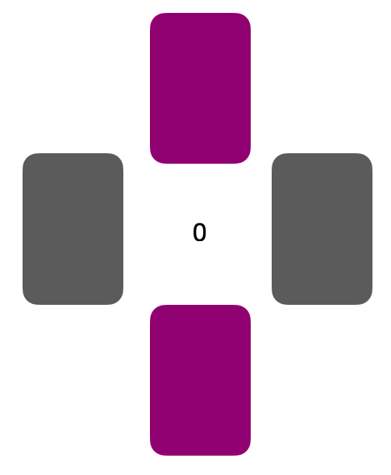

<!DOCTYPE html>
<html>
<head>
  <meta charset="utf-8"/> <!-- import the jsPsych core library, specific plugins, jquery and some custom scripts-->
  <title>Decision Making Task</title> <!-- defines a title in the browser tab -->
  <script src="jspsych-6.0.5/jspsych.js"></script> <!-- jsPsych core library -->
  <script src="jspsych-6.0.5/plugins/jspsych-instructions.js"></script> <!-- plugins define the specific tasks -->
  <script src="jspsych-6.0.5/plugins/jspsych-html-keyboard-response.js"></script>
  <script src="jspsych-6.0.5/plugins/jspsych-survey-multi-choice.js"></script>
  <script src="jspsych-6.0.5/plugins/jspsych-categorize-html.js"></script>
  <script src="jspsych-6.0.5/plugins/jspsych-survey-text-beta-6.1.js"></script> <!-- beta 6.1 version has the 'input required' function for text fields -->
  <script src="jspsych-6.0.5/plugins/jspsych-survey-multi-choice.js"></script>
  <script src="jspsych-6.0.5/plugins/jspsych-instructions.js"></script>
  <script src="jspsych-6.0.5/plugins/jspsych-audio-keyboard-response.js"></script>
  <script src="UPPSP.js"></script>
  <script src="jspsych-6.0.5/plugins/jspsych-survey-likert.js"></script>
  <script src="jspsych-6.0.5/plugins/jspsych-fullscreen.js"></script>
  <script src="js/jquery-1.7.1.min.js"></script> <!-- the jquery library is used to communicate with the server (to store the data) through "AJAX" and PHP -->
  <link href="jspsych-6.0.5/css/jspsych.css" rel="stylesheet" type="text/css"></link> <!-- jsPsych css stylesheet -->
</head>
<body></body>
<script>

/* create timeline */
var timeline = [];

// create trial_counter
var trial_ind = 1;

// is the experiment running from a server or not? (this determines if data is saved on server or offline)
if (document.location.host) { // returns your host or null
  online = true;
} else {
  online = false;
};

/*********** prolific ID ***********/
var prolific = {
  type: 'survey-text',
  questions: [
    {prompt: "Prease turn off music, cell phone and other devices that might be distracting. Enter your prolific ID below: ", required: true}],
  on_finish: function(data) {
    var responses = JSON.parse(data.responses);
    var prolific_ID = responses.Q0;
    jsPsych.data.addProperties({
      prolific_ID: prolific_ID
    });
  }
};

timeline.push(prolific);

/*********** fullscreen mode ***********/
var fullscreen_mode = {
  type: 'fullscreen',
  fullscreen_mode: true
};

timeline.push(fullscreen_mode);

// informed consent trial. The informed_consent_text variable comes from /configuration/text_variables.js
var consent = {
  type: 'instructions',
  pages: [
    '<p>I understand that:</p> '+
    '<p>Participation in this study is entirely voluntary, I can decline to answer any question at any time, and I can withdraw from the study at any time without giving a reason. </p>'+
    '<p>Non-participation or withdrawal from the study will not be of any disadvantage to my university career.</p>'+
    '<p>If I prematurely withdraw from the study, I will still be appropriately compensated for my participation. </p>'+
    '<p>During the data-gathering phase, I can instruct the researchers carrying out this study to delete (part of) the data obtained from me from their records.  </p>'+
    '<p>I am free to ask any questions at any time and I can arrange to discuss any concerns with the lead researcher (see below).</p>'+
    '<p> The information and data provided by me in this experiment will be used for statistical research and research administration purposes only.</p>'+
    '<p> No data or responses will be published in which I can be identified individually. </p>'+
    '<p> My personal details will not be revealed to people outside the research project. Signed consent and payment forms will be securely stored and disposed of after a 5-year retention period. I can have access to my personal data on the consent forms within the 5-year retention period. </p>'+
    '<p> Anonymized data from the study, which do not contain any personally identifying information, will be registered and archived at a trusted public data repository (e.g. OSF or Zenodo) in order to make them available to other researchers in line with current data sharing practices.</p>' +
    '<p> If you require more information about this study, please contact Nathalie Dusart; Email: nathalie.dusart@ugent.be</p>'],
  show_clickable_nav: true,
  button_label_next: "I agree",
  allow_backward: false
};

timeline.push(consent)

// get participant's age and add it to the datafile
var age = {
  type: 'survey-text',
  questions: [{
    prompt: "How old are you?",
    required: true
  }, ],
  on_finish: function(data) {
    var responses = JSON.parse(data.responses);
    var code = responses.Q0;
    jsPsych.data.addProperties({
      age: code
    });
  }
};

 // get participant's gender and add it to the datafile
var gender = {
  type: 'survey-multi-choice',
  questions: [{
    prompt: "Select your gender",
    options: ["male", "female", "I don't want to say"],
    required: true
  }, ],
  on_finish: function(data) {
    var responses = JSON.parse(data.responses);
    var code = responses.Q0;
    jsPsych.data.addProperties({
      gender: code
    });
  }
};

// get participant's nationality and add it to the datafile
var nationality = {
  type: 'survey-text',
  questions: [{
    prompt: "What is your nationality",
    required: true
  }, ],
  on_finish: function(data) {
    var responses = JSON.parse(data.responses);
    var code = responses.Q0;
    jsPsych.data.addProperties({
      nationality: code
    });
  }
};

var feelings = {
  type: 'survey-multi-choice',
  questions: [{
    prompt: "How are you feeling at this moment?",
    options: ["Unhappy", "Somwhat Unhappy", "Somewhat happy", "Happy"], //CE: please correct typos
    required: true
  }, ],
  on_finish: function(data) {
    var responses = JSON.parse(data.responses);
    var code = responses.Q0;
    jsPsych.data.addProperties({
      feelings: code
    });
  }
};

timeline.push(age, gender, nationality, feelings)


var instruction = {
     type: 'instructions',
     pages: [
     '</img>',
     '</img>'
     ]
 };

timeline.push(instruction)

// create factorial design
var factors = {
    amountPure: [5, 25, 50], //CE: Do you need different amounts? If not, you can deete this factor, makes it easier to analyses whe the amount is always 25 points.
    outcome: ['nonGamble', 'gambleWin', 'gambleLoss'],
    color: ['yellow', 'green', 'blue', 'orange']
};
var full_design = jsPsych.randomization.factorial(factors, 1); //todo: add no. of repetitions

// display stimuli depending on the design
for (var i = 0; i < full_design.length; i++) {
  if (full_design[i].outcome == 'nonGamble') {
    full_design[i].promptGamble = 0;
    full_design[i].amount = 0;
    full_design[i].image = "</img>";
  } else if (full_design[i].outcome == 'gambleWin' && full_design[i].color == 'yellow' && full_design[i].amountPure == 5) {
    full_design[i].amount = '+' + full_design[i].amountPure;
    full_design[i].image = "</img>";
  } else if (full_design[i].outcome == 'gambleWin' && full_design[i].color == 'green' && full_design[i].amountPure == 5) {
    full_design[i].amount = '+' + full_design[i].amountPure;
    full_design[i].image = "</img>";
  } else if (full_design[i].outcome == 'gambleWin' && full_design[i].color == 'blue' && full_design[i].amountPure == 5) {
    full_design[i].amount = '+' + full_design[i].amountPure;
    full_design[i].image = "</img>";
  } else if (full_design[i].outcome == 'gambleWin' && full_design[i].color == 'orange' && full_design[i].amountPure == 5) {
    full_design[i].amount = '+' + full_design[i].amountPure;
    full_design[i].image = "</img>";
  } else if (full_design[i].outcome == 'gambleLoss' && full_design[i].color == 'yellow' && full_design[i].amountPure == 5) {
    full_design[i].amount = '-' + full_design[i].amountPure;
    full_design[i].image = "</img>";
  } else if (full_design[i].outcome == 'gambleLoss' && full_design[i].color == 'green' && full_design[i].amountPure == 5) {
    full_design[i].amount = '-' + full_design[i].amountPure;
    full_design[i].image = "</img>";
  } else if (full_design[i].outcome == 'gambleLoss' && full_design[i].color == 'orange' && full_design[i].amountPure == 5) {
    full_design[i].amount = '-' + full_design[i].amountPure;
    full_design[i].image = "</img>";
  } else if (full_design[i].outcome == 'gambleLoss' && full_design[i].color == 'blue' && full_design[i].amountPure == 5) {
    full_design[i].amount = '-' + full_design[i].amountPure;
    full_design[i].image = "</img>";
  } else if (full_design[i].outcome == 'gambleWin' && full_design[i].color == 'yellow' && full_design[i].amountPure == 25) {
    full_design[i].amount = '+' + full_design[i].amountPure;
    full_design[i].image = "</img>";
  } else if (full_design[i].outcome == 'gambleWin' && full_design[i].color == 'green' && full_design[i].amountPure == 25) {
    full_design[i].amount = '+' + full_design[i].amountPure;
    full_design[i].image = "</img>";
  } else if (full_design[i].outcome == 'gambleWin' && full_design[i].color == 'blue' && full_design[i].amountPure == 25) {
    full_design[i].amount = '+' + full_design[i].amountPure;
    full_design[i].image = "</img>";
  } else if (full_design[i].outcome == 'gambleWin' && full_design[i].color == 'orange' && full_design[i].amountPure == 25) {
    full_design[i].amount = '+' + full_design[i].amountPure;
    full_design[i].image = "</img>";
  } else if (full_design[i].outcome == 'gambleLoss' && full_design[i].color == 'yellow' && full_design[i].amountPure == 25) {
    full_design[i].amount = '-' + full_design[i].amountPure;
    full_design[i].image = "</img>";
  } else if (full_design[i].outcome == 'gambleLoss' && full_design[i].color == 'green' && full_design[i].amountPure == 25) {
    full_design[i].amount = '-' + full_design[i].amountPure;
    full_design[i].image = "</img>";
  } else if (full_design[i].outcome == 'gambleLoss' && full_design[i].color == 'orange' && full_design[i].amountPure == 25) {
    full_design[i].amount = '-' + full_design[i].amountPure;
    full_design[i].image = "</img>";
  } else if (full_design[i].outcome == 'gambleLoss' && full_design[i].color == 'blue' && full_design[i].amountPure == 25) {
    full_design[i].amount = '-' + full_design[i].amountPure;
    full_design[i].image = "</img>";
  } else if (full_design[i].outcome == 'gambleWin' && full_design[i].color == 'yellow' && full_design[i].amountPure == 50) {
    full_design[i].amount = '+' + full_design[i].amountPure;
    full_design[i].image = "</img>";
  } else if (full_design[i].outcome == 'gambleWin' && full_design[i].color == 'green' && full_design[i].amountPure == 50) {
    full_design[i].amount = '+' + full_design[i].amountPure;
    full_design[i].image = "</img>";
  } else if (full_design[i].outcome == 'gambleWin' && full_design[i].color == 'blue' && full_design[i].amountPure == 50) {
    full_design[i].amount = '+' + full_design[i].amountPure;
    full_design[i].image = "</img>";
  } else if (full_design[i].outcome == 'gambleWin' && full_design[i].color == 'orange' && full_design[i].amountPure == 50) {
    full_design[i].amount = '+' + full_design[i].amountPure;
    full_design[i].image = "</img>";
  } else if (full_design[i].outcome == 'gambleLoss' && full_design[i].color == 'yellow' && full_design[i].amountPure == 50) {
    full_design[i].amount = '-' + full_design[i].amountPure;
    full_design[i].image = "</img>";
  } else if (full_design[i].outcome == 'gambleLoss' && full_design[i].color == 'green' && full_design[i].amountPure == 50) {
    full_design[i].amount = '-' + full_design[i].amountPure;
    full_design[i].image = "</img>";
  } else if (full_design[i].outcome == 'gambleLoss' && full_design[i].color == 'orange' && full_design[i].amountPure == 50) {
    full_design[i].amount = '-' + full_design[i].amountPure;
    full_design[i].image = "</img>";
  } else if (full_design[i].outcome == 'gambleLoss' && full_design[i].color == 'blue' && full_design[i].amountPure == 50) {
    full_design[i].amount = '-' + full_design[i].amountPure;
    full_design[i].image = "</img>";
  }
};

var start = {
  type: 'html-keyboard-response',
  stimulus: 'Press one of the arrow keys to start the next gamble',
  choices: ['leftarrow', 'rightarrow', 'downarrow', 'uparrow'],
};


// displaying doors; Data is logged
var doors = {
  type: "html-keyboard-response",
  stimulus: function(){return jsPsych.timelineVariable('image', true)},
  choices: function(){
    if (jsPsych.timelineVariable('outcome', true) == 'nonGamble'){
      return ['downarrow', 'uparrow'];
    } else {
      return ['leftarrow', 'rightarrow'];
    }
  },
  on_finish: function(data) {
    var last_rt = jsPsych.data.get().last(2).values()[0];
    data.startRT = last_rt.rt;
    startRT = data.startRT;
    console.log(startRT);
    responseTime = data.rt;
    console.log(responseTime);
    data.outcome = jsPsych.timelineVariable('outcome', true);
    data.amount = jsPsych.timelineVariable('amountPure', true);
    data.trial_type = 'task';
    data.trial_ind = trial_ind; // register trial number

  }
};

var feedback = {
  type: "html-keyboard-response",
  stimulus: function () {
    return jsPsych.timelineVariable('amount', true)},
  trial_duration: 1000,
  choices: jsPsych.NO_KEYS,
  on_finish: function(data){
    trial_ind = trial_ind + 1; // now add one to the trial number
  }

};


var trial_procedure = {
  timeline: [start, doors, feedback],
  timeline_variables: full_design,
};
timeline.push(trial_procedure) // CE: DO you want the trial procedure to be before the pos valence? At the moment it once goes through the entire full_desogn (so 3x3x4 trials before presenting the pos valence)


//positive valence
var posvalence = { //CE: I would not play it for so long. 10 seconds maximum. Also: I would shorten the audio files to 10 seconds just to be sure.
    type: 'audio-keyboard-response', //CE: make sure you load this plugin, otherwise you cannot use it. (see beginning)
    stimulus: 'positive.mp3',
    trial_duration: 30000,
    choices: jsPsych.NO_KEYS,
    prompt: "<p>Let's take a little break.</p>",
    trial_ends_after_audio: true,
};
timeline.push(posvalence)
timeline.push(feelings)
timeline.push(trial_procedure)

//negative valence
var negvalence = { //CE: see comments above
    type: 'audio-keyboard-response',
    stimulus: 'negative.mp3',
    trial_duration: 30000,
    choices: "NO_KEYS",
    prompt: "<p>Let's take a little break.</p>",
    response_ends_trial: false
};
timeline.push(negvalence)
timeline.push(feelings)
timeline.push(trial_procedure)


// create block feedback
var block_feedback = {
  type: 'html-keyboard-response',
  stimulus: 'You won 200 points.',
};

timeline.push(block_feedback)

//no music //CE: what are these for? At the moment these lines do not add anything
var block_procedure0 = {
  timeline: [consent, age, gender, nationality, instruction, feelings, trial_procedure],
};

//positive
var block_procedure1 = {
  timeline: [consent, age, gender, nationality, instruction, feelings, posvalence, trial_procedure],
};

//negative
var block_procedure2 = {
  timeline: [consent, age, gender, nationality, instruction, feelings, negvalence, trial_procedure],
};

/*********** UPPS-P questionnaire ***********/
var instructions_UPPSP = {
  type: 'instructions',
  pages: [
    'In the last part of this study, you will see a number of statements that describe ways in which people think and act. For each statement, please indicate how much you agree or disagree with the statement by selecting Agree Strongly, Agree Somewhat, Disagree Somewhat or Disagree Strongly. Be sure to indicate your agreement or disagreement for every statement. Press the arrow key to start the task.'
  ],
  key_forward: 'rightarrow',
  on_start: function() {
    document.body.style.cursor = 'auto'; // show the mouse cursor
  }
};

timeline.push(instructions_UPPSP);

// show UPPSP questionnaire
timeline.push(...UPPSP_items);


// function that appends data to an existing file (or creates the file if it does not exist)
function appendData(filename, filedata) {
  $.ajax({ // make sure jquery-1.7.1.min.js is loaded in the html header for this to work
    type: 'post',
    cache: false,
    url: 'php/save_data_append.php', // IMPORTANT: change the php script to link to the directory of your server where you want to store the data!
    data: {
      filename: filename,
      filedata: filedata
    },
  });
};

var final_debrief = {  //CE: this needs some extra work. HEre you want du explain to the student the purpose and research question. THis is very important when you work with Credit students!
  type: 'html-keyboard-response',
  stimulus:"<p> Thank you for participating! In this study we want to look at the influence of emotions on impulsive actions.</p>" +
    "<p>More specifically, we will look at how fast you started the next trial after a loss versus a win. </p>" +
    "<p>If you have any questions, you can contact the researcher at nathalie.dusart@ugent.be.</p>"
};

timeline.push(final_debrief);


// function to add participant info and trial no. to data file
  /* #########################################################################
  the functions that save the data and initiates the experiment
  ######################################################################### */

  /* start the experiment and save data*/
jsPsych.init({
  timeline: timeline,
  on_data_update: function(data){
    if (online){
      var subjID = jsPsych.data.get().last(1).values()[0]['prolific_ID'];
      if (data.trial_index == 1){ // write header at first event
        data_row = "prolific_ID,Age,Gender,Nationality,Feelings, valence, stimulus,trial_number,outcome,amount,startRT,RT,key_press,resp,factor,color,time_elapsed\n" //CE: the valence data is missing
        appendData('CardsData_'+ subjID +'.csv',data_row)
      } else if (data.trial_type == 'task' || data.trial_type == 'survey-likert'){ // append data each stimulus when a categorize-html occurs
        data_row = data.prolific_ID + ',' + data.age + ',' + data.gender + ',' + data.nationality + ',' + data.feelings + ','+ data.stimulus + ',' + data.trial_ind + ',' +
                      data.outcome + ',' + data.amount + ',' +
                      data.startRT + ','  + data.rt + ',' + data.key_press + ',' + data.resp + ',' + data.factor + ',' + data.color + ',' + data.time_elapsed  + '\n'
        appendData('CardsData_'+ subjID +'.csv',data_row)
      }
    }
  },
  on_finish: function() {
      if (!online){
        jsPsych.data.get().filter({trial_type: 'task' || trial_type == 'survey-likert'}).localSave('csv','mydata.csv');
      }
  }
})

</script>
</html>
